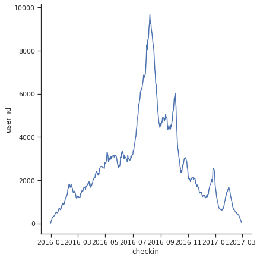
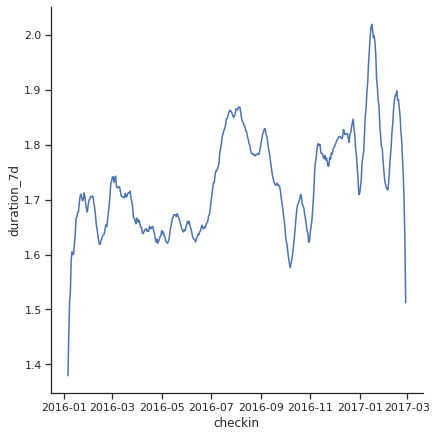
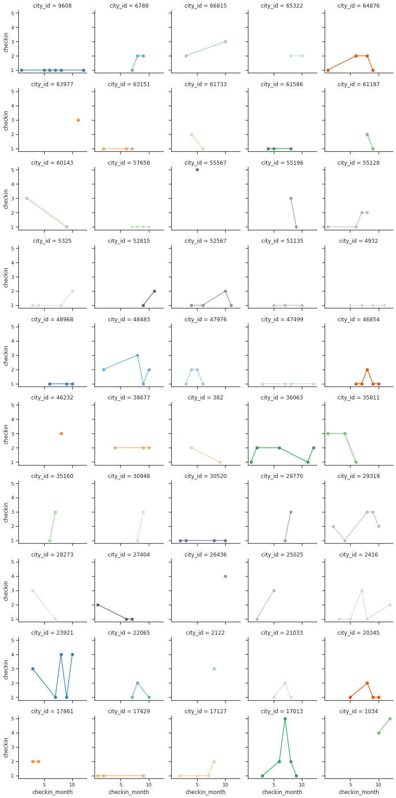

Booking.com Trip Recommendation¶
Baseline¶
import pandas as pd
!wget https://github.com/sparsh-ai/reco-data/raw/master/BookingChallenge.zip
!unzip BookingChallenge.zip
train_set = pd.read_csv('train_set.csv').sort_values(by=['utrip_id','checkin'])
print(train_set.shape)
train_set.head()
(1166835, 9)
| user_id | checkin | checkout | city_id | device_class | affiliate_id | booker_country | hotel_country | utrip_id | |
|---|---|---|---|---|---|---|---|---|---|
| 0 | 1000027 | 2016-08-13 | 2016-08-14 | 8183 | desktop | 7168 | Elbonia | Gondal | 1000027_1 |
| 1 | 1000027 | 2016-08-14 | 2016-08-16 | 15626 | desktop | 7168 | Elbonia | Gondal | 1000027_1 |
| 2 | 1000027 | 2016-08-16 | 2016-08-18 | 60902 | desktop | 7168 | Elbonia | Gondal | 1000027_1 |
| 3 | 1000027 | 2016-08-18 | 2016-08-21 | 30628 | desktop | 253 | Elbonia | Gondal | 1000027_1 |
| 4 | 1000033 | 2016-04-09 | 2016-04-11 | 38677 | mobile | 359 | Gondal | Cobra Island | 1000033_1 |
test_set = pd.read_csv('test_set.csv').sort_values(by=['utrip_id','checkin'])
print(test_set.shape)
test_set.head()
(378667, 9)
| user_id | checkin | checkout | device_class | affiliate_id | booker_country | utrip_id | city_id | hotel_country | |
|---|---|---|---|---|---|---|---|---|---|
| 0 | 1000066 | 2016-07-21 | 2016-07-23 | desktop | 9924 | Gondal | 1000066_2 | 56430 | Urkesh |
| 1 | 1000066 | 2016-07-23 | 2016-07-25 | desktop | 9924 | Gondal | 1000066_2 | 41971 | Urkesh |
| 2 | 1000066 | 2016-07-25 | 2016-07-28 | desktop | 9924 | Gondal | 1000066_2 | 5797 | Urkesh |
| 3 | 1000066 | 2016-07-28 | 2016-07-31 | mobile | 2436 | Gondal | 1000066_2 | 0 | NaN |
| 4 | 1000270 | 2016-02-08 | 2016-02-09 | mobile | 9452 | The Devilfire Empire | 1000270_1 | 50075 | The Devilfire Empire |
# what are the top 4 most visited cities?
topcities = train_set.city_id.value_counts().index[:4]
topcities
Int64Index([47499, 23921, 36063, 17013], dtype='int64')
# how many trips are there in the test set?
test_trips = (test_set[['utrip_id']].drop_duplicates()).reset_index().drop('index', axis=1)
len(test_trips)
70662
# baseline - a simple logical rule - recommend top 4 most visitied cities to everyone
cities_prediction = pd.DataFrame([topcities]*test_trips.shape[0],
columns= ['city_id_1','city_id_2','city_id_3','city_id_4'])
cities_prediction[:5]
| city_id_1 | city_id_2 | city_id_3 | city_id_4 | |
|---|---|---|---|---|
| 0 | 47499 | 23921 | 36063 | 17013 |
| 1 | 47499 | 23921 | 36063 | 17013 |
| 2 | 47499 | 23921 | 36063 | 17013 |
| 3 | 47499 | 23921 | 36063 | 17013 |
| 4 | 47499 | 23921 | 36063 | 17013 |
predictions = pd.concat([test_trips, cities_prediction], axis=1)
print(predictions.shape)
predictions.head()
(70662, 5)
| utrip_id | city_id_1 | city_id_2 | city_id_3 | city_id_4 | |
|---|---|---|---|---|---|
| 0 | 1000066_2 | 47499 | 23921 | 36063 | 17013 |
| 1 | 1000270_1 | 47499 | 23921 | 36063 | 17013 |
| 2 | 1000441_1 | 47499 | 23921 | 36063 | 17013 |
| 3 | 100048_1 | 47499 | 23921 | 36063 | 17013 |
| 4 | 1000543_1 | 47499 | 23921 | 36063 | 17013 |
ground_truth = pd.read_csv('ground_truth.csv', index_col=[0])
print(ground_truth.shape)
ground_truth.head()
(70662, 2)
| city_id | hotel_country | |
|---|---|---|
| utrip_id | ||
| 1038944_1 | 54085 | Sokovia |
| 1068715_1 | 29319 | Cobra Island |
| 1075528_1 | 55763 | Bozatta |
| 1110462_4 | 11930 | Alvonia |
| 1132565_1 | 58659 | Axphain |
def evaluate_accuracy_at_4(predictions, ground_truth):
'''checks if the true city is within the four recommended cities'''
data = predictions.join(ground_truth, on='utrip_id')
hits = ((data['city_id']==data['city_id_1'])|(data['city_id']==data['city_id_2'])|
(data['city_id']==data['city_id_3'])|(data['city_id']==data['city_id_4']))*1
return hits.mean()
evaluate_accuracy_at_4(predictions, ground_truth)
0.05271574537941185
EDA¶
import numpy as np
import pandas as pd
import seaborn as sns
import matplotlib.pyplot as plt
from pandas_profiling import ProfileReport
%matplotlib inline
sns.set_theme(style="ticks")
!wget https://github.com/sparsh-ai/reco-data/raw/master/BookingChallenge.zip
!unzip BookingChallenge.zip
df = pd.read_csv('train_set.csv',
dtype={"user_id": str, "city_id": str,
'affiliate_id': str, 'utrip_id': str},
date_parser=['checkin', 'checkout'])
df.head()
| user_id | checkin | checkout | city_id | device_class | affiliate_id | booker_country | hotel_country | utrip_id | |
|---|---|---|---|---|---|---|---|---|---|
| 0 | 1000027 | 2016-08-13 | 2016-08-14 | 8183 | desktop | 7168 | Elbonia | Gondal | 1000027_1 |
| 1 | 1000027 | 2016-08-14 | 2016-08-16 | 15626 | desktop | 7168 | Elbonia | Gondal | 1000027_1 |
| 2 | 1000027 | 2016-08-16 | 2016-08-18 | 60902 | desktop | 7168 | Elbonia | Gondal | 1000027_1 |
| 3 | 1000027 | 2016-08-18 | 2016-08-21 | 30628 | desktop | 253 | Elbonia | Gondal | 1000027_1 |
| 4 | 1000033 | 2016-04-09 | 2016-04-11 | 38677 | mobile | 359 | Gondal | Cobra Island | 1000033_1 |
df['checkin'] = pd.to_datetime(df['checkin'])
df['checkout'] = pd.to_datetime(df['checkout'])
df['duration'] = (df['checkout'] - df['checkin']).dt.days
df_group_checkin = df.groupby('checkin').agg({'user_id': 'count', 'duration': 'mean'})
df_group_checkin['duration_7d'] = df_group_checkin['duration'].rolling(window=7).mean()
df_group_checkin.head()
| user_id | duration | duration_7d | |
|---|---|---|---|
| checkin | |||
| 2015-12-31 | 3 | 1.000000 | NaN |
| 2016-01-01 | 53 | 1.226415 | NaN |
| 2016-01-02 | 123 | 1.430894 | NaN |
| 2016-01-03 | 171 | 1.339181 | NaN |
| 2016-01-04 | 258 | 1.472868 | NaN |
g = sns.relplot(data=df_group_checkin, x="checkin", y="user_id", kind="line", height=6)

g = sns.relplot(data=df_group_checkin, x="checkin", y="duration_7d", kind="line", height=6)

df = df.iloc[0:1000]
df['checkin_month'] = df.checkin.dt.month
df['checkin_dayofweek'] = df.checkin.dt.dayofweek
df['checkin_quarter'] = df.checkin.dt.quarter
df['checkin_is_weekend'] = df.checkin.apply(lambda x : 1 if x.day_name in ['Saturday','Sunday'] else 0)
df['checkin_str'] = df['checkin'].astype(str)
df['checkout_str'] = df['checkout'].astype(str)
df['step'] = 1
df['step']= df.groupby(['utrip_id']).step.cumsum()
df.head()
| user_id | checkin | checkout | city_id | device_class | affiliate_id | booker_country | hotel_country | utrip_id | duration | checkin_month | checkin_dayofweek | checkin_quarter | checkin_is_weekend | checkin_str | checkout_str | step | |
|---|---|---|---|---|---|---|---|---|---|---|---|---|---|---|---|---|---|
| 0 | 1000027 | 2016-08-13 | 2016-08-14 | 8183 | desktop | 7168 | Elbonia | Gondal | 1000027_1 | 1 | 8 | 5 | 3 | 0 | 2016-08-13 | 2016-08-14 | 1 |
| 1 | 1000027 | 2016-08-14 | 2016-08-16 | 15626 | desktop | 7168 | Elbonia | Gondal | 1000027_1 | 2 | 8 | 6 | 3 | 0 | 2016-08-14 | 2016-08-16 | 2 |
| 2 | 1000027 | 2016-08-16 | 2016-08-18 | 60902 | desktop | 7168 | Elbonia | Gondal | 1000027_1 | 2 | 8 | 1 | 3 | 0 | 2016-08-16 | 2016-08-18 | 3 |
| 3 | 1000027 | 2016-08-18 | 2016-08-21 | 30628 | desktop | 253 | Elbonia | Gondal | 1000027_1 | 3 | 8 | 3 | 3 | 0 | 2016-08-18 | 2016-08-21 | 4 |
| 4 | 1000033 | 2016-04-09 | 2016-04-11 | 38677 | mobile | 359 | Gondal | Cobra Island | 1000033_1 | 2 | 4 | 5 | 2 | 0 | 2016-04-09 | 2016-04-11 | 1 |
def count_hotel(hotel_country):
return len(list(np.unique(hotel_country)))
def list_without_last(itens):
return list(itens[:-1])
def list_without_last_and_pad(pad=5, dtype=int):
def add_pad(items):
arr = list_without_last(items)
arr = list(([dtype(0)] * (pad - len(arr[-pad:])) + arr[-pad:]))
return arr
return add_pad
df_trip = df.sort_values(['checkin']).groupby(['utrip_id']).agg(
user_id=('user_id', 'first'),
count_unique_city=('city_id', count_hotel),
trip_size=('checkin', len),
start_trip=('checkin', 'first'),
checkin_list=('checkin_str', list_without_last_and_pad(5, str)),
checkout_list=('checkout', list_without_last_and_pad(5)),
duration_list=('duration', list_without_last_and_pad(5, int)),
city_id_list=('city_id', list_without_last_and_pad(5, str)),
device_class_list=('device_class', list_without_last_and_pad(5, str)),
affiliate_id_list=('affiliate_id', list_without_last_and_pad(5, str)),
booker_country_list=('booker_country', list_without_last_and_pad(5, str)),
hotel_country_list=('hotel_country', list_without_last_and_pad(5, str)),
step_list=('step', list_without_last_and_pad(5, int)),
last_city_id=('city_id', 'last')
)
df_trip['end_trip'] = df_trip['checkout_list'].apply(lambda x: x[-1] if len(x) > 1 else None)
df_trip = df_trip.loc[df_trip['end_trip']!=0,:]
df_trip['end_trip'] = pd.to_datetime(df_trip['end_trip'])
df_trip['duration'] = (df_trip['end_trip'] - df_trip['start_trip']).dt.days
df_trip.head()
| user_id | count_unique_city | trip_size | start_trip | checkin_list | checkout_list | duration_list | city_id_list | device_class_list | affiliate_id_list | booker_country_list | hotel_country_list | step_list | last_city_id | end_trip | duration | |
|---|---|---|---|---|---|---|---|---|---|---|---|---|---|---|---|---|
| utrip_id | ||||||||||||||||
| 1000027_1 | 1000027 | 4 | 4 | 2016-08-13 | [0, 0, 2016-08-13, 2016-08-14, 2016-08-16] | [0, 0, 2016-08-14 00:00:00, 2016-08-16 00:00:0... | [0, 0, 1, 2, 2] | [0, 0, 8183, 15626, 60902] | [0, 0, desktop, desktop, desktop] | [0, 0, 7168, 7168, 7168] | [0, 0, Elbonia, Elbonia, Elbonia] | [0, 0, Gondal, Gondal, Gondal] | [0, 0, 1, 2, 3] | 30628 | 2016-08-18 | 5 |
| 1000033_1 | 1000033 | 4 | 5 | 2016-04-09 | [0, 2016-04-09, 2016-04-11, 2016-04-12, 2016-0... | [0, 2016-04-11 00:00:00, 2016-04-12 00:00:00, ... | [0, 2, 1, 2, 2] | [0, 38677, 52089, 21328, 27485] | [0, mobile, desktop, desktop, desktop] | [0, 359, 384, 384, 384] | [0, Gondal, Gondal, Gondal, Gondal] | [0, Cobra Island, Cobra Island, Cobra Island, ... | [0, 1, 2, 3, 4] | 38677 | 2016-04-16 | 7 |
| 1000045_1 | 1000045 | 7 | 7 | 2016-06-18 | [2016-06-20, 2016-06-22, 2016-06-24, 2016-06-2... | [2016-06-22 00:00:00, 2016-06-24 00:00:00, 201... | [2, 2, 1, 1, 2] | [55128, 9608, 31817, 36170, 58178] | [desktop, desktop, desktop, mobile, mobile] | [7974, 7974, 7974, 359, 359] | [The Devilfire Empire, The Devilfire Empire, T... | [Fook Island, Fook Island, Carpathia, Carpathi... | [2, 3, 4, 5, 6] | 36063 | 2016-06-28 | 10 |
| 1000083_1 | 1000083 | 4 | 4 | 2016-06-13 | [0, 0, 2016-06-13, 2016-06-14, 2016-06-15] | [0, 0, 2016-06-14 00:00:00, 2016-06-15 00:00:0... | [0, 0, 1, 1, 1] | [0, 0, 55990, 14705, 35160] | [0, 0, mobile, mobile, mobile] | [0, 0, 359, 359, 359] | [0, 0, The Devilfire Empire, The Devilfire Emp... | [0, 0, Osterlich, Osterlich, Osterlich] | [0, 0, 1, 2, 3] | 36063 | 2016-06-16 | 3 |
| 100008_1 | 100008 | 5 | 5 | 2016-07-18 | [0, 2016-07-18, 2016-07-21, 2016-07-22, 2016-0... | [0, 2016-07-21 00:00:00, 2016-07-22 00:00:00, ... | [0, 3, 1, 1, 2] | [0, 11306, 12096, 6761, 6779] | [0, desktop, desktop, desktop, desktop] | [0, 8436, 8436, 8436, 8436] | [0, Gondal, Gondal, Gondal, Gondal] | [0, Kamistan, Kamistan, Kamistan, Kamistan] | [0, 1, 2, 3, 4] | 65690 | 2016-07-25 | 7 |
df_city_group = df.groupby('city_id').agg({'checkin': 'count', 'duration': 'mean'})\
.sort_values('checkin',ascending=False)
df_city_month_group = df.groupby(['city_id', 'checkin_month']).agg({'checkin': 'count', 'duration': 'mean'})\
.reset_index().sort_values(['city_id', 'checkin_month', 'checkin'],ascending=False)
city_idx = list(df_city_group.index)[:50]
df_plot = df_city_month_group[df_city_month_group.city_id.isin(city_idx)]
grid = sns.FacetGrid(df_plot, col="city_id", hue="city_id", palette="tab20c",
col_wrap=5, height=2.5)
grid.map(plt.plot, "checkin_month", "checkin", marker="o")
grid.fig.tight_layout(w_pad=1)

def count_hotel(hotel_country):
return len(list(np.unique(hotel_country)))
def join_city(city):
return "_".join(list(city))
df_utrip_id_group = df.groupby('utrip_id').agg({'checkin': 'count',
'duration': ['mean', 'sum'],
'hotel_country': count_hotel,
'city_id': join_city})
df_utrip_id_group.columns = ["_".join(pair) for pair in df_utrip_id_group.columns]
df_utrip_id_group = df_utrip_id_group.sort_values('checkin_count', ascending=False)
df_utrip_id_group['multiply_country'] = (df_utrip_id_group['hotel_country_count_hotel'] > 1).astype(int)
sns.pairplot(df_utrip_id_group, hue="multiply_country")
/usr/local/lib/python3.7/dist-packages/seaborn/distributions.py:306: UserWarning: Dataset has 0 variance; skipping density estimate.
warnings.warn(msg, UserWarning)
<seaborn.axisgrid.PairGrid at 0x7f4941884610>